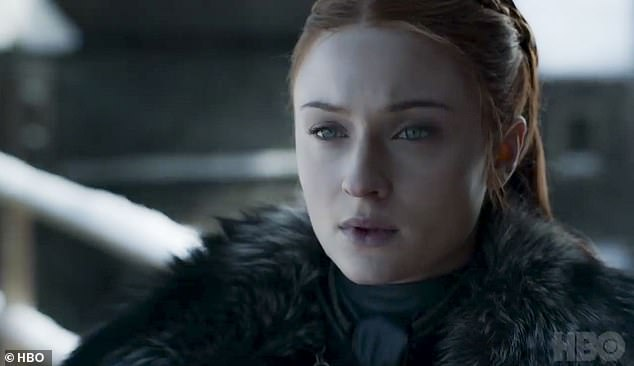
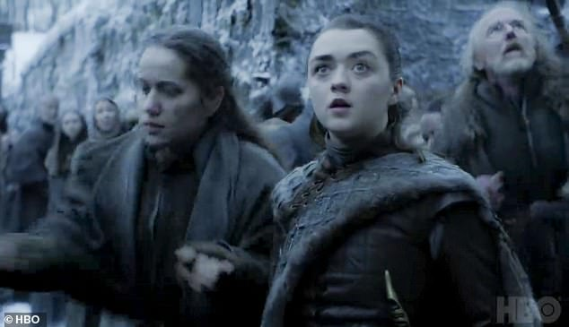
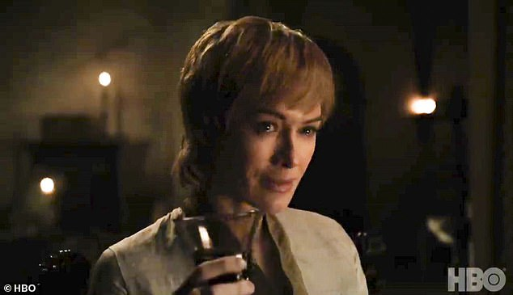
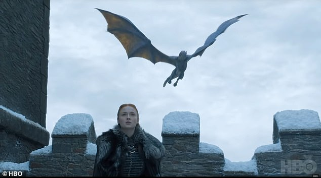

Game Of Thrones star Maisie Williams has admitted that nothing could have prepared her for shooting her final scenes for the show's forthcoming eighth and last season.
The actress - who has played Arya Stark in the HBO fantasy series since it first hit screens in 2011 -told Vogue magazine that shooting the mammoth fight scene - which took 55 nights to film and will be the climax to the series - left her 'looking around around asking "what are we doing?"'
'All the training in the world couldn't have prepared me for the amount of stamina you needed for these night shoots,' she told the publication. 'It gets to the point where it's four o'clock in the morning and you're looking around like, "This is ridiculous. What are we doing?"'
Emotional roller-coaster: Game Of Thrones star Maisie Williams has admitted that nothing could have prepared her for shooting her final scenes for the show's forthcoming eighth and last season [pictured with L-R Sophie Turner, Gwendoline Christie and Lena Headey]
Her close friend and co-star Sophie Turner added, of their last day on set: 'I couldn't control myself! I cried for hours and hours once it wrapped.
'It was like leaving behind a character that I've grown up with. It's almost like a death.'
The pair were interviewed by the magazine alongside co-star Lena Headey, who reminised about when she first got the job on the show before it had gone on air yet.
'None of us knew [how big it would be]. You do your audition, you get a job and then you think, "Will anyone watch this?",' she said.
Her close friend and co-star Sophie Turner added, of their last day on set: 'I couldn't control myself! I cried for hours and hours once it wrapped'

Sophie said: 'It was like leaving behind a character that I've grown up with. It's almost like a death'

Not prepared: The pair were interviewed by the magazine alongside co-star Lena Headey, who reminised about when she first got the job on the show before it had gone on air yet

Overlap: Indeed, the TV show - which is an adaptation of A Song Of Ice And Fire, Martin's series of fantasy novels, the first of which is titled A Game Of Thrones - followed the published books in the series until it overtook them
Indeed, the TV show - which is an adaptation of A Song Of Ice And Fire, Martin's series of fantasy novels, the first of which is titled A Game Of Thrones - followed the published books in the series until it overtook them.
Since then, the show's writers have taken their own path where the plot is concerned, meaning the series will end differently to the books.
Martin's seventh novel - to be titled A Dream Of Spring - is said to be the final book, but the author has not ruled out the possibility that it won't be.
He also recently revealed he has been so busy working on the sixth book in the series that he had to turn down a cameo appearance in the final season of the TV show, which is set to air next month.
He said: '[Showrunners David Benioff and Dan Weiss] invited me to a cameo in one of the final episodes, which I was tempted to do.
'But I didn’t think just for the sake of a cameo I could take the time to return to Belfast.'
See the full feature in the April issue of British Vogue, available via digital download and on newsstands Friday March 8.